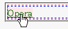
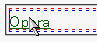

ある要素にマージンに負の値を指定して、先行する要素に重なるように配置すると、重なっている部分でリンクが機能しない。
<style type="text/css">
#a {
border: 1px dashed red;
height: 20px;
font-size: 16px;
}
#b {
border: 1px dashed blue;
height: 20px;
font-size: 16px;
margin-top: -20px;
}
</style>
<div id="a"> </div>
<div id="b"><a href="../opera.html">Opera</a></div>
idがbのp要素（青枠）は、上マージンに負の値が設定されており、idがaのp要素（赤枠）に重なっています。リンクが機能するかを確認してください。
リンク文字列にマウスポインタを乗せたときのスクリーンショットです。
Moz1.0.1での表示
Opera6.05での表示
リンク文字列が一部だけ重なっている場合は、先行する要素と重なっていない部分だけがマウスポインタ等に反応します。
<style type="text/css">
#a {
border: 1px dashed red;
height: 20px;
font-size: 16px;
}
#c {
border: 1px dashed blue;
height: 20px;
font-size: 16px;
margin-top: -12px;
}
</style>
<div id="a"> </div>
<div id="c"><a href="../opera.html">Opera</a></div>
この例では、赤枠の下辺より下はマウスポインタ等に反応しますが、赤枠内に入り込んでいる部分は反応しません。
Opera6.05では不具合の発生が確認されました。Opera7.0では標準・互換モードともに不具合の発生は確認されませんでした。